Name : Jackson Yuan
Student Number : 301387501
Last edited date : Jan 30th, 2023
Honor statement: I have not cheated in any way when doing this assignment, I did it on my own.
I may have asked questions about the assignment on Piazza, I know that’s totally fine and even encouraged.
I also already know that this class is graded on a curve. I realize that if I cheat and by some miracle not get caught,
any increase in my grade will in turn shift the curve and result in lower grades for my classmates. Any undeserved extra grade would come at the cost of all others.
That’s horrible! I would never do it.
1. Take two photograph
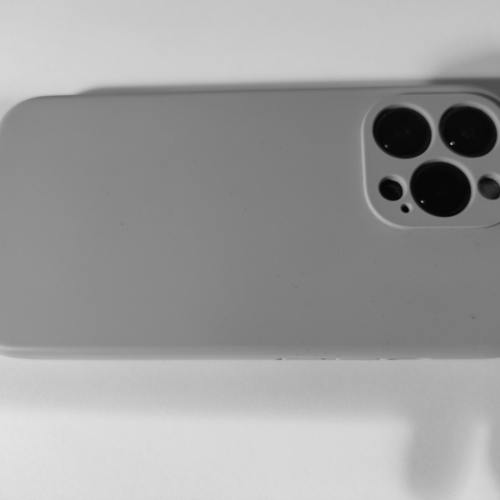
2. Compute frequency representations
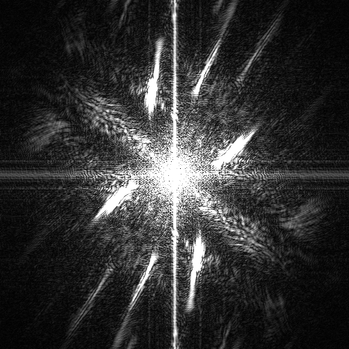
3. Visualize kernels
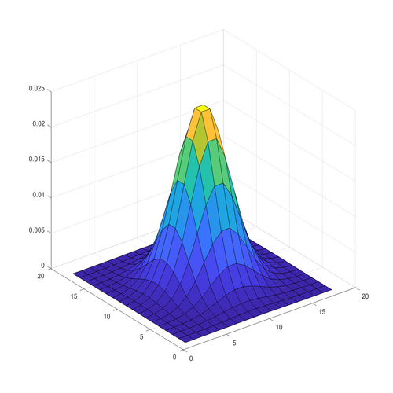
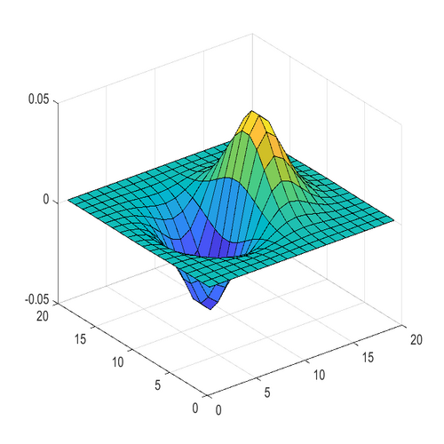
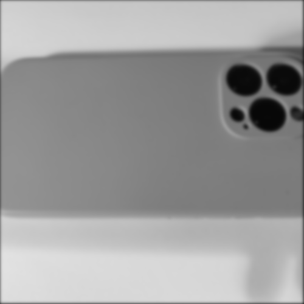
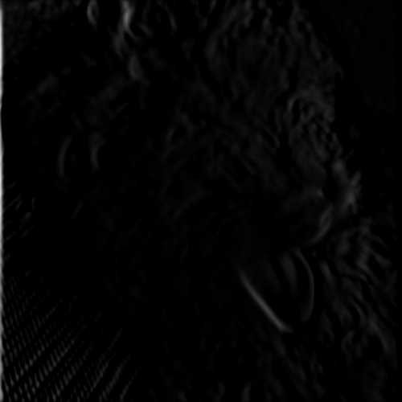

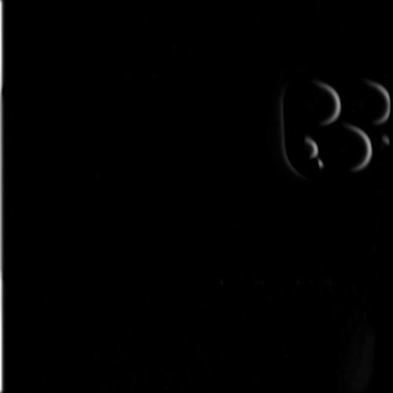
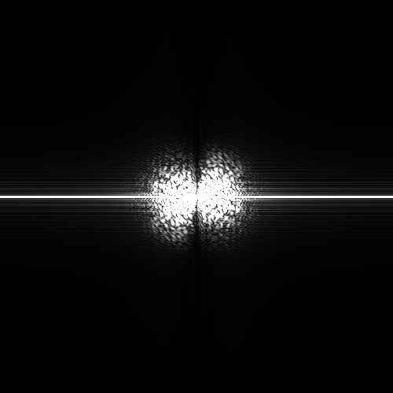
4. Anti-aliasing
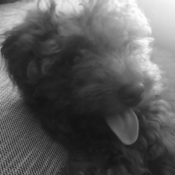
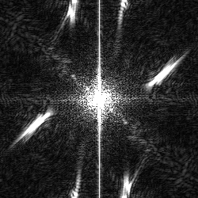
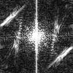
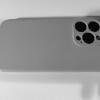
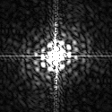
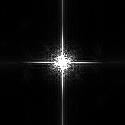
5. Canny edge detection thresholding
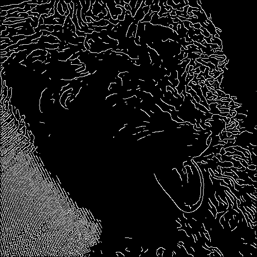HP-Canny-Optimal
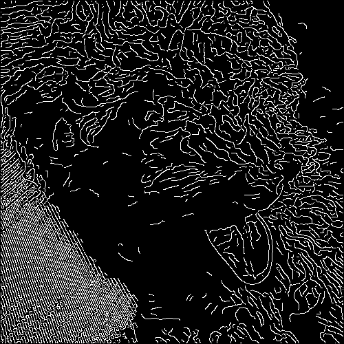HP-Canny-lowlow
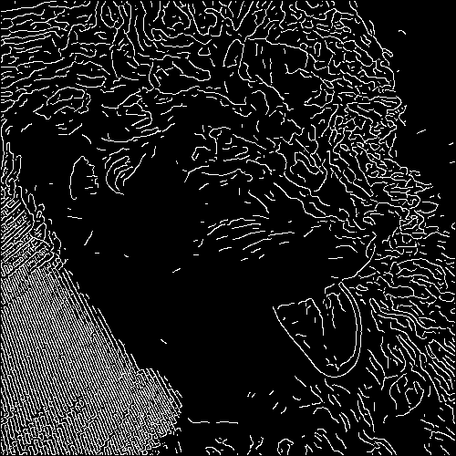HP-Canny-highlow
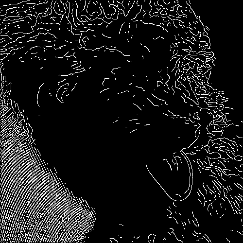HP-Canny-lowhigh
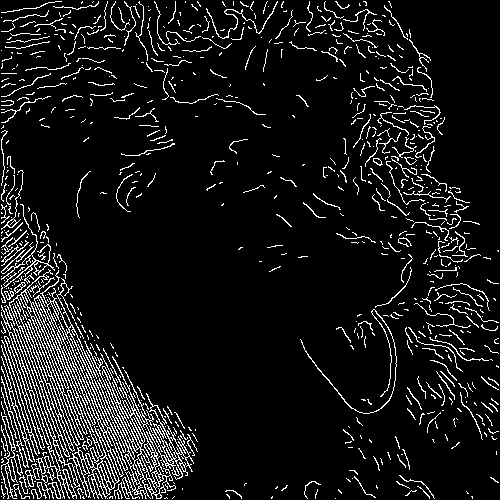HP-Canny-highhigh
The highhigh is [0.09 0.093]
The lowhigh is [0.085 0.087]
The highlow is [0.055 0.06]
The lowlow is [0.04 0.05]
The optimal is [0.075 0.077]
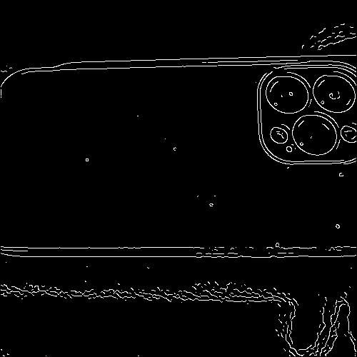LP-Canny-Optimal
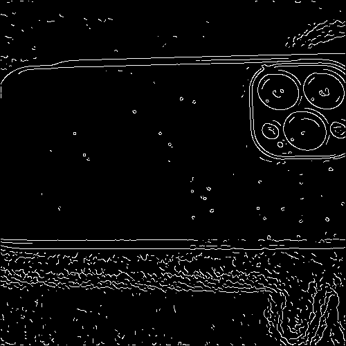LP-Canny-lowlow
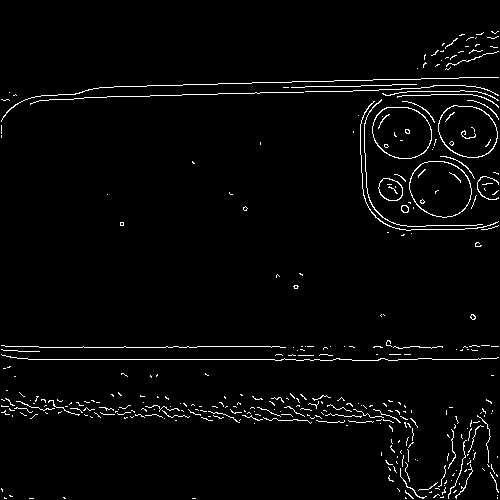LP-Canny-highlow
LP-Canny-lowhigh
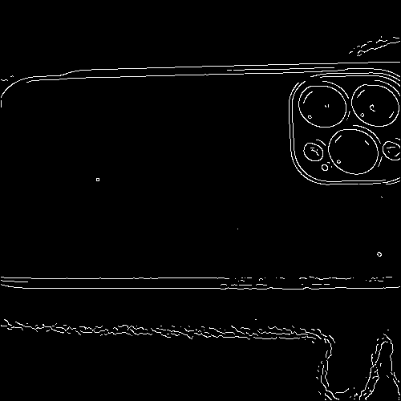LP-Canny-highhigh
The highhigh is [0.031 0.03115]
The lowhigh is [0.028 0.029]
The highlow is [0.02 0.021]
The lowlow is [0.01254 0.01315]
The optimal is [0.0225 0.0227]